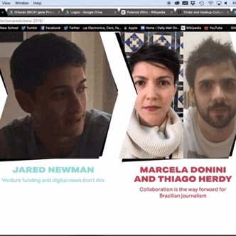
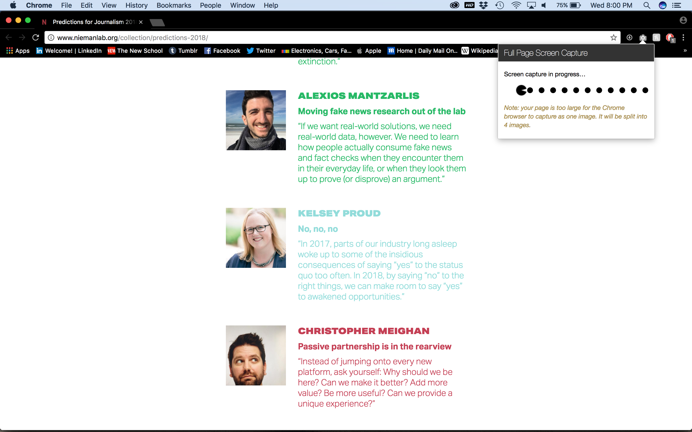
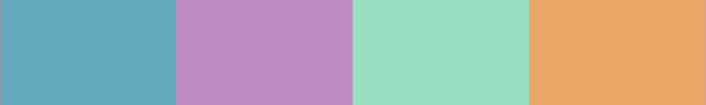
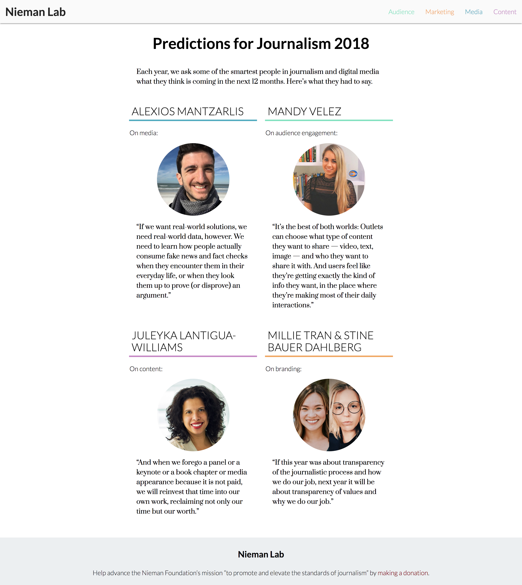

For the first project of the semester we were put in groups of four (or five) to redesign Nieman Lab’s Predictions for Journalism 2018 with HTML/CSS. Each member of the group is assigned a different role and is responsible for designing their individual web pages. The project should be coded and designed, for desktop and mobile, pulling from one CSS file. Content and elements of the pages were pulled from the Nieman Lab site, in addition to our group’s deliberate additions and subtractions.
The original NiemanLab Predictions website had a lot of use of color. We didn’t want to eliminate color completely from the design, but wanted to incorporate it in a more meaningful way. Each individual color is used to represent the separate quote categories. The original website also had a very long scrolling feature, and an even longer one on mobile. We did like their use of pull quotes to visually highlight a general statement from each person in addition to their use of a type hierarchy. Including pictures with each person was also something we saw as a strength because it helped put a face to their words.
 Our website is a 70% reading experience and 30% browsing. The homepage is meant more for browsing, but once the article is chosen they are mostly text pieces with some images. The entire visit should take a user 7-10 minutes when viewed on mobile. The articles are fairly short and can be read on a subway ride. Depending on the person, the entire experience can be done in one sitting. A user can choose to look at the homepage and one article only or someone else might spend time reading through all the articles, etc. The entire modules for the subjects are redirects to their articles, and also the NiemanLab logo are redirects, in addition to each article page that contains links to each person’s social media handles. The type of person who might visit this website is anyone interested in journalism, is a follower of NiemanLab, or interested in media platforms in general.
For the homepage, we have four separate categories that relate to content, branding, audience engagement, and media. This decision was based on recurring themes we found in the articles which in the original website, were uncategorized. We noticed the seemingly highlighted people at the top were highlighted for no apparent reason so we felt making categories was the best option to present the people on the website. We decided on a grid to fix the endless scrolling problem on the original site. In the end we wanted to create a website that was easier to navigate and had a simpler design than the original. Color was used to distinguish the categories with no specific meaning.
 With this project, we learned the importance of UX design. The person who designed the original site didn’t seem to not take into account that the user’s experience was difficult because of the endless scrolling. In working with a group of four, we also learned how balance and compromise ideas and suggestions the four of us had for the project.
Our work process was organized by making small deadlines to complete certain phases of the project for specific dates through the week. Typically, design decisions were made by Orlando and Tricia from Thursday-Sunday. By Sunday night they were passed off to Alice and Orlando for developing and completed by Tuesday night leaving Wednesday the day to receive feedback from Tricia and India.
We mostly communicated via Slack and had meetings at school whenever schedules permitted.